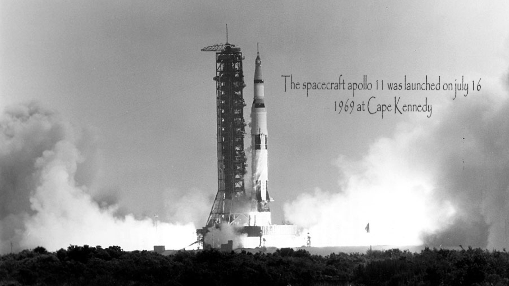
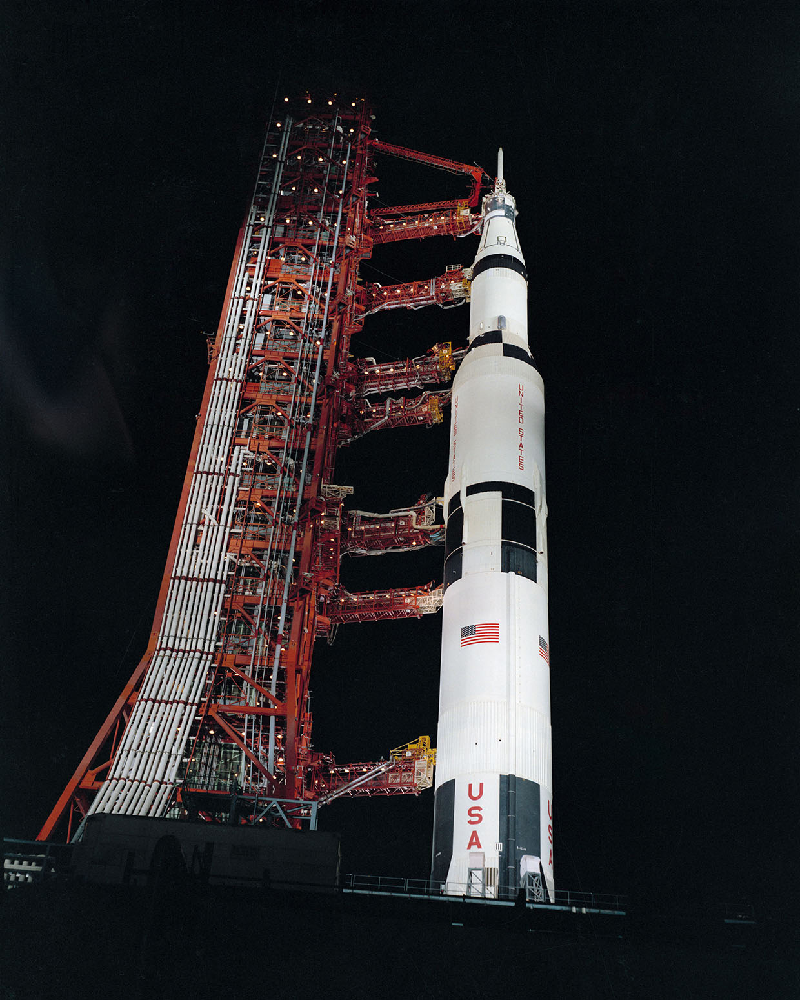
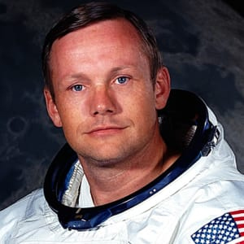
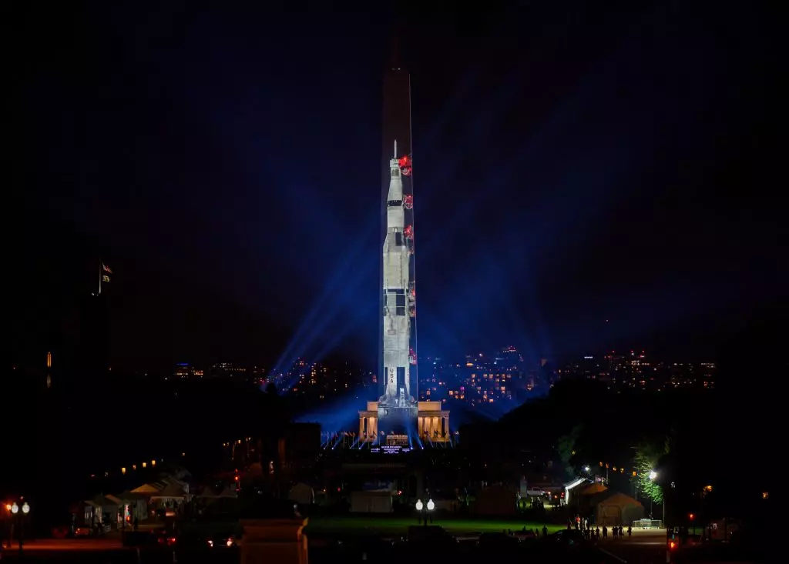

Apollo was the name given to the first of the six missions that took men to the moon. The first steps on the moon were taken by Neil Armstrong and Buzz Aldrin on July, 16 in 1969. The spacecraft returned on earth the 24 of July without having encountered any problems during the flight which made the crews of the next apollo missions more confident. After Armstrong and Aldrin landed on the moon, they installed a camera to prove that they were the first to walk on the moon.Officially, the first flag that was planted in another planetary body was the american one. Today, there are five countries hwo have flags on the moon: U.S.A., India, China, Japan and the old Soviet Union, today Russia.
Yes, of course there was other Apollo missions directed by NASA. In total, there was 17 missions, but not all of them were meant to take men on the moon, like Apollo 12.The Apollo missions are numbered from one to 17. Six of them were supposed to take men to the moon, beginning with apollo 11. Apollo 1 was a mission where the crew orbited the earth to test out the setup for the moon landing program. All the Apollo missions were a success, except Apollo 13, the famous "Houston, we had a problem". Apollo 13 malfunction was caused by an explosion and rupture of oxygen in tank number 2. Apollo 13 was supposed to be the third moon-landing mission, after Apollo 11 and 12.
The U.S.A. wanted to go to the moon for many reasons. First of all, flying and exploring new places is a dream that humanity always had. Second of all, It was a race. In the Cold War, U.S.A. wanted to show their superiority to the Soviet Union. One of the ways to show wich one was superior to the other was the space. U.S.S.R. was the first to sent a man in the space, to launch a satellite, to send a women in the space, e.t.c. All these achievements lead to the conclusion that U.S.S.R. was superior to the u.s in space technology. But that was before Apollo 11. The u.s sent the first moon-landing succeded mission. All the superiority the Soviet Union had didn't count anymore because the U.S.A. went to the moon.

Apollo 11 interests me a lot because it's a dream that the N.A.S.A. realised. That dream also happened because of its astronauts. Let's interest ourselves to Neil Armstrong and Buzz Aldrin. Neil armstrong is born in Wapakoneta, Ohio, on August 5, 1930. He began his N.A.S.A. career in Ohio, in 1962. he worked 17 years and held important post in the N.A.S.A., even if he became officialy an astronauts in 1962. After five years as an astronaut, Armstrong was desined for the first moon-landing mission, apollo 11. Buzz Aldrin was born in Montclair, New Jersey, in 1930. He became a N.A.S.A. astronaut in 1963. In november 1966, he orbited aboard the Gemini 12 (a N.A.S.A. project) spacecraft. N.A.S.A. chose him to be part of the Apollo 11 crew. Without him, the moon-landing would have been impossible.
The 24 july 2019, american people will celebrate the 50 years of the Apollo 11 landing on earth, after landing and orbiting the moon. For, that occasion, there will be a reconstitution of the apollo 11 spacecraft on the Washington Monument. This is an important day, because 50 years ago, people changed the vision of space that the world had. Today, the objectif is no more the moon but Mars. The moon is an objectif that, with enough money, people could reach the moon. Mars is another thing, because the distance is much bigger than the distance to the moon. Apollo 11 realised a dream, 50 years ago.
